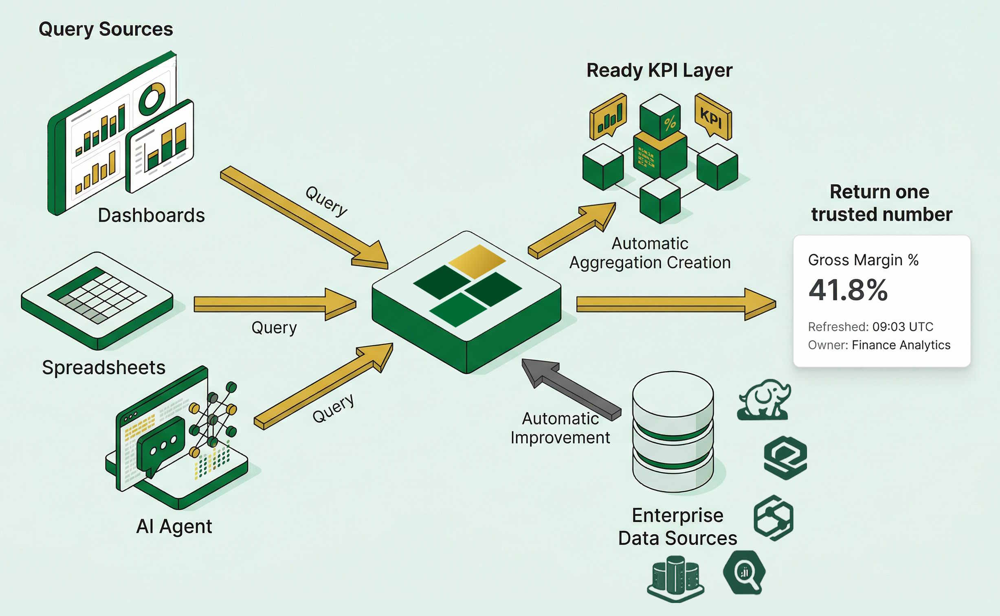

one governed KPI definition from approved data sources
Return
one trusted number with freshness and owner context
One Consistent Answer
The same KPI answer, delivered in the way each team works.
Tessallite keeps one governed metric definition behind the scenes while each audience consumes the result through its preferred interface.
Excel Interface
Business Leaders
Leadership teams open familiar Excel views and receive the same trusted KPI with ownership and freshness context, without navigating data complexity.
BI Workspace
Business Analysts
Analysts use existing BI dashboards and slices, while Tessallite ensures each visual resolves to the same governed definition and approved data sources.
Big Data Layer
Data Engineers
Engineering teams can inspect and optimize deep data paths with full technical control, while preserving identical business meaning in every output.
Same KPI DefinitionSame Refresh ContextSame Accountable Owner
Would you like big data on an Excel sheet?
Billions of Records. Sub-Second Speed. 80% Less Cost.
Stop paying for expensive full-table scans. Tessallite is the acceleration layer that turns massive data warehouses into interactive playgrounds for users and AI agents alike.
The Interrogation Layer
Conversational Big Data Without the Noise
AI agents thrive on clarity, yet they are often overwhelmed by the messy reality of data warehouses. Tessallite creates a clinical environment for AI-driven discovery.
Shielding AI from Structural Noise
Tessallite does more than just accelerate; it simplifies. By serving as a governed semantic proxy, it spares your AI agents from navigating complex physical schemas and expensive multi-way joins. Instead, AI interacts with clean, logical business entities at sub-second speeds. This architectural abstraction ensures that your LLMs focus on high-level reasoning and accurate interrogation, while Tessallite handles the heavy lifting of physical optimization and data exactness under the hood.
Logical Governance
The Blueprint of Your Analytical Universe
Stop forcing users to understand your database schema. Tessallite provides a clinical logical layer where business definitions are centralized, governed, and permanent.
Unified Measures & Dimensions
Define complex metrics like "Contribution Margin" or "LTV" once. Tessallite ensures these definitions remain consistent across Excel, Power BI, and your AI agents.
Intelligent Hierarchies
Map your data's natural relationships from time-series grains to geographical roll-ups, enabling seamless, error-free drill-downs at any scale.
Automated Aggregation Mapping
No more manual aggregate tuning. Tessallite automatically maps your semantic entities to the most efficient physical summary tables, maximizing ROI without human intervention.
Platform Architecture
How Tessallite processes every request
A governed flow from user tools to trusted KPI output, designed for both business accessibility and engineering control.
Client Tools
Excel, BI, SQL, and AI entry points.
Gateway
JDBC and XMLA protocol translation.
Query Router
Pattern-based route decision and fallback.
Model Service
Semantic model, joins, measures, and lineage.
Optimizer + Scheduler
ROI scoring, refresh, and retirement cycle.
Trusted Output
KPI with source, owner, and freshness context.
Core Capabilities
Three pillars behind consistent business answers
Capability blocks are aligned for governance, usability, and operational transparency across teams.
Semantic Coverage
Projects, models, sources, targets, tables, and columns.
Measures, dimensions, joins, hierarchies, and UDAs.
Lineage and operational diagnostics metadata.
Dual Catalog Strategy
Business view for non-technical consumers.
Technical view for advanced analysts and engineers.
Hidden-column cascade control by model governance.
Glossary Lifecycle
Bootstrap proposals, approvals, and versioning.
Synonyms, attachments, and governed terminology.
Public tokenized glossary sharing and exports.
Capability Deep Dive
How Tessallite delivers accuracy, speed, and control
The platform combines semantic governance, optimization automation, and protocol compatibility so teams do not trade trust for performance.
Semantic Governance Engine
Model once, consume everywhere. Tessallite centralizes business logic so teams stop reconciling KPI definitions between Excel, BI, and engineering tools.
Model Objects
Entities include tables, columns, dimensions, measures, joins, and hierarchies.
Dual Exposure
Separate business and technical model views reduce noise while preserving depth.
Lineage Context
Every modeled definition can be traced to accountable sources and ownership.
Automated Aggregate Lifecycle
Optimization is managed as an end-to-end operating cycle, not a manual tuning project. Tessallite continuously improves response time and cost posture.
Miss Detection
Tracks expensive recurring query misses and ranks candidates by impact.
ROI Scoring
Build decisions are prioritized by expected performance and cost benefit.
Refresh And Retirement
Policies control refresh cadence, stale aggregate cleanup, and cap enforcement.
Glossary And Business Trust
Business language is treated as a governed asset. Definitions, synonyms, and ownership are managed with lifecycle control and sharable outputs.
Controlled Workflow
Proposal, review, approval, and versioning workflows protect glossary quality.
Shareability
Publish revocable tokenized glossary links for business stakeholders.
Portable Exports
Deliver glossary artifacts in CSV, XLSX, and PDF for governance reporting.
Protocol Compatibility And Isolation
Adoption is accelerated by integrating with familiar query channels while preserving tenant-level separation and operational control.
JDBC Wire Compatibility
PostgreSQL-style protocol support for SQL-centric tools and workflows.
XMLA / DAX Endpoint
Excel and Power BI consumption without forcing analyst behavior changes.
Multi-Tenant Routing
System registry with per-tenant isolation supports enterprise governance.
Ready to validate Tessallite against your KPI domain?
Choose a business-first walkthrough or a technical architecture session based on your team's immediate decision needs.
We solved the three biggest hurdles in big data: cost, speed, and trust.
Kill the Full Table Scan
Every time you click a filter in BI, your warehouse scans petabytes of raw data. Tessallite stops the waste by routing queries to smart, automated aggregates, cutting your cloud bill by up to 80%.
Interactive AI Interrogation
AI needs context, but speed is the bottleneck. Tessallite's semantic layer provides deterministic data at sub-second speeds, allowing AI to interrogate your big data in real-time conversations.
1 Billion Rows in Excel
Imagine opening an Excel Pivot Table connected to a 1,000,000,000 record table. With Tessallite, it feels like a local file, completely responsive, flexible, and instant.
Product Direction
Where Tessallite is heading next
Current delivery is strong, and the roadmap focuses on measurable gains in intelligence, runtime speed, and cost efficiency.
Intelligent
Confidence-scored routing, explainable optimization recommendations, and semantic drift detection to keep model behavior transparent.
Speed
Pre-warming of high-value aggregate paths, adaptive refresh concurrency, and metadata caching to reduce latency across busy workloads.
Cost control
Budget-aware optimization modes, duplicate prevention, and storage-versus-savings controls to sustain long-term ROI.
Transparent Acceleration
Tessallite sits between your tools and your warehouse. It learns your query patterns and optimizes data access automatically.

01
Intercept
Tessallite provides a universal gateway for SQL and DAX queries, ensuring seamless integration with all industry-standard BI solutions.
02
Optimize
Our router finds the fastest way to get your answer. If a summary table exists, we use it. If not, we fall back to the source.
03
Save
By avoiding massive scans, your warehouse costs drop instantly while your users get answers in milliseconds.
Your Data, Your Control
Deploy Tessallite exactly where you need it. Public cloud, private VPN, or completely local.
Zero Phone Home
Tessallite does not require a connection to third-party services. Your metadata and queries stay within your network.
Air-Gapped Ready
Perfect for highly regulated environments. Run it in total isolation on your own hardware or private cloud.
Full Sovereignty
Maintain 100% ownership of your analytical patterns. No data ever leaves your environment.
The Founder's Vision
"Tessallite was built to solve a specific problem: the massive gap between big data and interactive speed. This solution was built to give data teams and the AI agents they build the power to interrogate billions of records without waiting for a scan or worrying about the bill."
Mohammed Othman
Founder & Lead Architect, Tessallite
Ready for analytics at the speed of thought?
Contact us today and give your business the power of interactive big data.